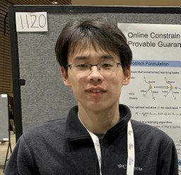

School of Electrical Engineering and Computer Science,
The Pennsylvania State University
Google Scholar
Email: spx5032@psu.edu
About me
I am a PhD student at the Pennsylvania State University, advised by Prof. Minghui Zhu.
I received the B.E. in Electrical Engineering from Xi'an Jiaotong University.
My research interests are centered around reinforcement learning, meta-learning, and LLM fine-tuning.
- Reinforcement Learning: Algorithm design for policy optimization, meta-RL under multi-task with multi-environment, reinforcement learning from human feedback (RLHF), application to robots
- Meta-learning: Meta-reinforcement learning, pretraining on collected tasks and adapting to new tasks, human-in-the-loop adaptation, applications to robotics
- LLM post-training: Reinforcement learning for LLM fine-tuning, LLM reasoning, agentic LLM fine-tuning under complex, multi-turn interaction scenarios
Professional Experiences
- Amazon Stores Foundational AI (Rufus), Amazon Inc., Palo Alto, CA
Applied Scientist Intern, May 2025 - Dec 2025
Built an RL-based post-training and verifiable data systhesis pipeline to improve LLM tool-calling ability (Mentor: Dr. Shiyang Li)
Honors and Awards
- Emeritus Professor C. Russell Philbrick Research Assistant Award, The Pennsylvania State University (2026)
- Graduate Student Publication Excellence Award, The Pennsylvania State University (2025)
- Melvin P. Bloom Memorial Graduate Fellowship, The Pennsylvania State University (2024)
- Max And Joan Schlienger Graduate Scholarship in Engineering, The Pennsylvania State University (2022)
- Professor and Mrs. Ralph U. Blasingame Memorial Graduate Fellowship in Engineering, The Pennsylvania State University (2021)
Teaching Experiences
- Teaching Assistant, EE 211/212: Circuit Analysis (Spring 2024)
- Teaching Assistant, EE 350: Continuous-Time Linear Systems (Fall 2025)
Professional Services
- Conference paper review: ICLR; AISTATS; ICML; NeurIPS; AAAI; ICRA; IROS; ACC; CDC
- Journal paper review: IEEE TPAMI; IEEE RAL; IEEE TRO; IEEE TAC; Automatica; IEEE TCST; IEEE/CAA Journal of Automatica Sinica; IET Cyber-Systems and Robotics
Visitor Map
The map below shows the approximate locations of recent visitors.